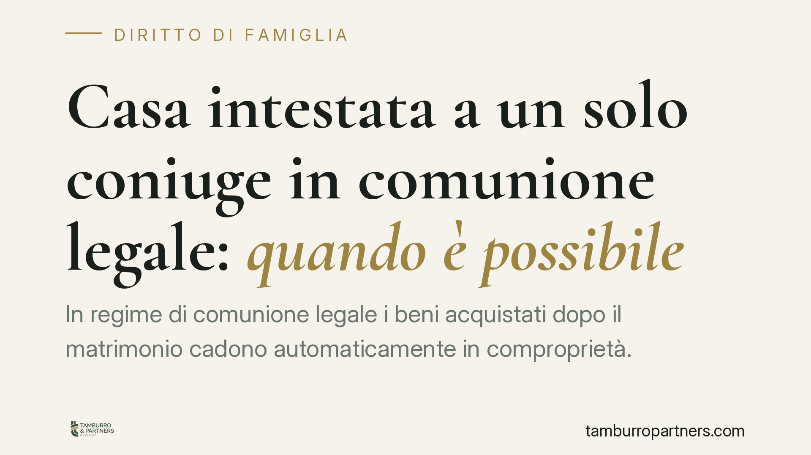

Casa intestata a un solo coniuge in comunione legale: quando è possibile
In regime di comunione legale i beni acquistati dopo il matrimonio cadono automaticamente in comproprietà. Esistono però eccezioni previste dalla legge che consentono a un solo coniuge di intestarsi un immobile come bene personale. Capire quando operano queste eccezioni evita contenziosi futuri e dichiarazioni imprudenti che possono avere conseguenze anche penali.

Il punto di partenza: la regola della comunione
Chi si sposa senza scegliere un regime diverso rientra automaticamente nella comunione legale dei beni. La conseguenza è netta: gli acquisti compiuti dopo le nozze appartengono a entrambi i coniugi in parti uguali, anche se materialmente pagati e intestati a uno solo.
Questo significa che, di norma, non basta firmare da soli un atto di compravendita per escludere il partner dalla proprietà. L'immobile entra comunque nella comunione. La domanda "posso intestarmi la casa?" ha quindi una risposta articolata: dipende dalla provenienza del denaro e dalla natura dell'acquisto.
Inquadramento normativo
L'articolo 179 del Codice civile elenca i beni che restano personali e non cadono in comunione. Tra questi rilevano soprattutto:
- i beni acquistati prima del matrimonio;
- i beni pervenuti per successione o donazione, salvo che l'atto specifichi la destinazione alla comunione;
- i beni acquistati con il prezzo del trasferimento di beni personali o con il loro scambio, purché ciò sia dichiarato nell'atto di acquisto.
Quest'ultima ipotesi è la più delicata. Se un coniuge acquista una casa usando denaro proveniente da un bene personale (per esempio la vendita di un immobile ereditato), l'acquisto può restare personale, ma a due condizioni: la dichiarazione della provenienza del denaro nell'atto e, secondo la giurisprudenza, la partecipazione all'atto dell'altro coniuge, che confermi la natura personale dell'acquisto.
La Cassazione Civile ha chiarito che la sola dichiarazione unilaterale non basta a escludere il bene dalla comunione quando si tratta di reinvestimento di denaro personale: serve il concorso dell'altro coniuge, che riconosca la circostanza. Diverso è il caso dell'immobile pervenuto per successione o donazione, che resta personale per sua stessa natura, a prescindere dalla dichiarazione.
Cosa cambia in concreto
Le implicazioni pratiche sono rilevanti. Un bene qualificato come personale:
- non si divide al momento della separazione o del divorzio;
- non entra nell'asse da liquidare in caso di scioglimento della comunione;
- resta aggredibile solo dai creditori personali del coniuge intestatario.
Attenzione però all'articolo 184 del Codice civile, che disciplina gli atti di disposizione dei beni comuni compiuti da un solo coniuge senza il consenso dell'altro. Per gli immobili, l'atto compiuto senza il necessario consenso è annullabile su domanda del coniuge pretermesso entro termini precisi. Errare sulla qualificazione del bene può quindi generare instabilità dell'acquisto.
Un ulteriore profilo riguarda le dichiarazioni non veritiere. Dichiarare falsamente che il denaro proviene da un bene personale, per sottrarre l'immobile alla comunione, non produce l'effetto voluto e può esporre a contestazioni, anche di natura penale per false attestazioni in atto pubblico. La convenienza apparente si traduce spesso in un rischio concreto.
Cosa fare in concreto
- Ricostruisci la provenienza del denaro prima dell'acquisto: conserva documentazione bancaria e atti che dimostrino l'origine personale delle somme.
- Fai intervenire l'altro coniuge nell'atto quando l'acquisto avviene con reimpiego di beni personali: la sua adesione consolida la natura personale del bene.
- Verifica la natura del bene originario: successione e donazione seguono regole diverse dal reinvestimento di denaro.
- Evita dichiarazioni compiacenti o non veritiere: non producono l'effetto sperato ed espongono a responsabilità.
- Valuta un cambio di regime: la separazione dei beni, adottata con convenzione, può essere la soluzione più lineare per chi desidera acquisti autonomi.
Ogni situazione va esaminata sui documenti concreti. Prima di firmare un atto rilevante, consigliamo di far verificare in anticipo la qualificazione del bene, per evitare che una scelta improvvisata comprometta la stabilità dell'acquisto.
---
*Contributo informativo a cura di Tamburro & Partners - Avv. Giuseppe Tamburro. Non costituisce parere legale.*
Ogni famiglia ha il suo equilibrio.
Separazione, divorzio, affidamento, assegno: se vuoi un confronto riservato su una specifica situazione, scrivi allo studio. Ti rispondiamo entro un giorno lavorativo.